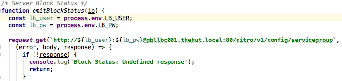
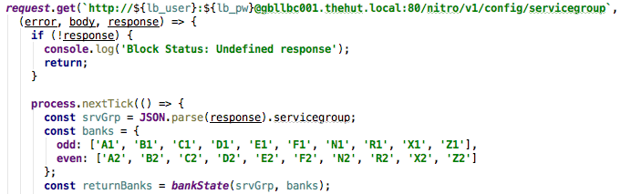
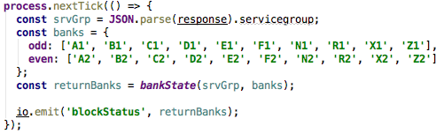

Deployment Dashboard
fe-dash.io.thehut.local:8080
What is it?


What does it do?


 Socket.io
Socket.io
 Express
React
Express
React
 Gulp
Gulp
 Babel
Socket.io
Babel
Socket.io
Real-time event-based communication using web sockets (and fallbacks when web sockets are not available)
Express
Framework for making Node-based web applications
React
UI component library. Re-renders on state change so is useful for apps that have complicated states with lots of mutations
Gulp
Build tools. Used for compiling our Sass, creating the JS bundle (Browserify) and running Babel transformations
SVG manipulation tool, most commonly used for graphs and charts
Babel
JavaScript compiler primarily used to access yet-to-be-added features from the ECMAScript spec, as well as transforming JS supersets (TypeScript, JSX) back down to JS
Once the user is logged in and a connection is established we are able to achieve a unidirectional data flow between the server and the client because we are using web sockets, this helps keep code complexity to a minimum

*A pure function is a functional programming concept in which the return value of a function is defined only by the given input, it effectively is a black box and has no side effects (it cannot alter any external state).
- Release Outcomes per Day
- Release Schedule
- Releases by Team
- Last Build Report
- Last Build Committed
- Current Build on 999
- Live Releases
- Replication Times
Contains all components.



io.emit('eventName', payload)
- Getting started with React:
facebook.github.io/react/docs/getting-started.html - Component lifecycle methods:
facebook.github.io/react/docs/component-specs.html#lifecycle-methods - Top-level API:
facebook.github.io/react/docs/top-level-api.html - Props:
Covered in the above, essentially params passed to a React component
eg. MyComponent.js
var MyClass = React.createClass({ ... });
componentDidMount:function() {
socket.on('myEvent', function(socket) {
// Do something
}
}
src/javascripts/components/boards
You will see the boards being imported at the top, a select tag with all boards inside a BoardOption component, as well as each board listed inside our object being exported.
Board naming must be consistent to ensure it's picked up by the root component, App
- LB_USER: Load balancer username
- LB_PW: Load balancer password
- USER_NAME: DC account, use 'thehut\deploymentdashboard'
- PASSWORD: DC password, use 'LnnqdtiurOZkNRyqh8rs'
$ LB_USER='xxx' LB_PW='xxx' USER_NAME='xxx' PASSWORD='xxx' node ./bin/www
$ ps -ef | grep "node"
$ LB_USER='xxx' LB_PW='xxx' USER_NAME='xxx' PASSWORD='xxx' nohup node ./bin/www & disown
- Unit Test Code Coverage - Anthony
- Style Stats per Build - Simon
- Jira Workflows - Sam
- Add releases archive as source for releases data
- Front end style overhaul
- Proper deployment process
- Test suite